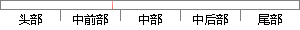

而微步的威胁分析平台做到一个站点完成鉴别、定性、溯源、追踪等多重任务，弥补了国内市场的不足。
片段位置图

相似结果|
1
原句片段：而微步的威胁分析平台做到一个站点完成鉴别、定性、溯源、追踪等多重任务，弥补了国内市场的不足。
相似片段 1：安全分析师为同行打造的一站式分析平台 , 一个站点完成鉴别、定性、溯源、追踪等多重任务让我们帮助你 鉴别检测攻击、排除误报 威胁情报 200+威胁情报源,千万级...
|
※ 片段修改建议 ※
近似词参考：- 威胁：要挟 威逼
- 分析：阐发 阐明 剖析
- 鉴别：辨别 判别
- 重任：重担
- 任务：使命 义务
- 弥补：填补 补充
- 不足：不敷
系统自动生成语句：而微步的要挟阐发平台做到一个站点完成辨别、定性、溯源、追踪等多重担务，填补了国内市场的不敷。
注：本片段修改建议为系统自动生成，仅供参考。